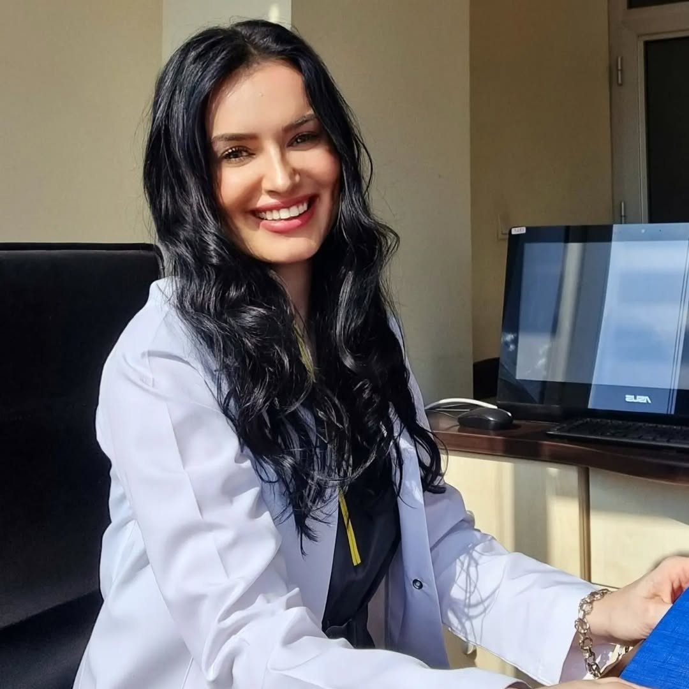
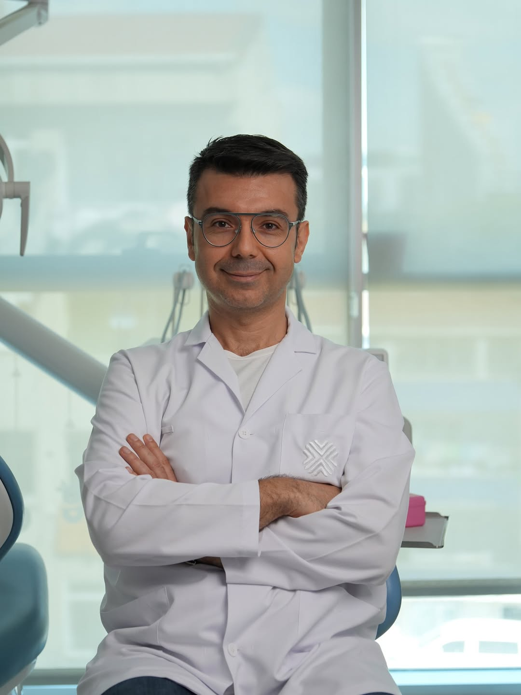
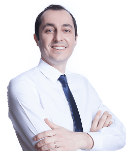

Dr. Ahmet Kiğılı
Dentist / Prosthodontist
Dr. Ahmet Kiğılı is a renowned Turkish dentist specializing in esthetic and prosthetic dentistry. He has extensive experience in full-mouth rehabilitations, implant-supported prosthetics, and esthetic restorations.
View Profile

Prof. Dr. Esra UZER ÇELİK
Professor & Restorative Dentistry Specialist
Prof. Dr. Esra UZER ÇELİK is an expert in restorative and aesthetic dentistry, with extensive experience in composite restorations, digital dentistry, and international academic contributions.
View Profile

Doç. Dr. Mustafa Gündoğar
Endodontist & Researcher
Doç. Dr. Mustafa Gündoğar is an expert in endodontics with extensive experience in root canal treatments, Ni-Ti rotary systems, and regenerative endodontics. He is also a frequent lecturer at international dental conferences.
View Profile

Prof. Dr. Erhan Çömlekçioğlu
Prosthodontist & Academic
Prof. Dr. Erhan Çömlekçioğlu is a leading prosthodontics expert from Turkey, specializing in digital dentistry, monolithic restorations, and implant-supported prostheses. He has published over 100 peer-reviewed articles and regularly lectures at national and international dental conferences.
View Profile

Dr. Dt. Gülcan Şahin
Pedodontist
Dr. Dt. Gülcan Şahin specializes in pediatric dentistry, focusing on minimally invasive treatments for children, dental aesthetics, and preventive care.
View Profile